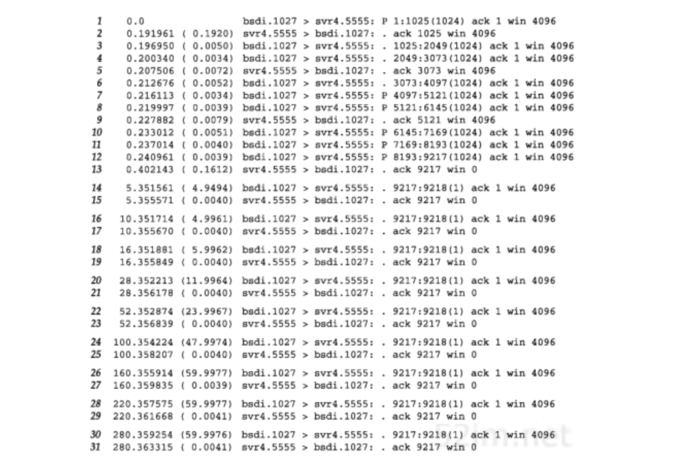
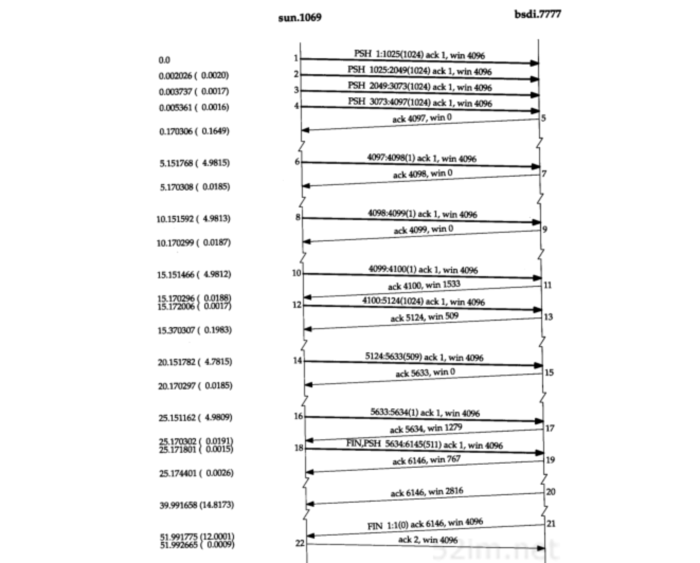

TCP：坚持定时器
已经看到TCP通过让接收方指明希望从发送方接收的数据字节数（即窗口大小）来进行流量控制。如果窗口大小为0会发生什么情况呢？这将有效地阻止发送方传送数据，直到窗口变为非0为止
可以在图20-3中看到这种情况。当发送方接收到报文段9时，它打开被报文段8关闭的窗口并立即开始发送数据。TCP必须能够处理打开此窗口的 ACK（报文段9）丢失 的情况。ACK的传输并不可靠，也就是说， TCP不对ACK报文段进行确认，TCP只确认那些包含有数据的ACK报文段
如果一个确认丢失了，则双方就有可能因为等待对方而使连接终止：接收方等待接收数据（因为它已经向发送方通告了一个非0的窗口），而发送方在等待允许它继续发送数据的窗口更新。为防止这种死锁情况的发生，发送方使用一个坚持定时器来周期性地向接收方查询，以便发现窗口是否已增大。这些从发送方发出的报文段称为 窗口探查 。在本章中将讨论窗口探查和坚持定时器，还将讨论与坚持定时器有关的 糊涂窗口综合症
实例
为了观察到实际中的坚持定时器，先启动一个接收进程。它监听来自客户的连接请求，接受该连接请求，然后在从网络读取数据前休眠很长一段时间
sock程序可以通过指定一个暂停选项 -P 使服务器在接受连接和进行第一次读动作之间进入休眠。以这种方式调用服务器：
svr4 % sock -i -s -P100000 5555
该命令在从网络上读数据之前休眠100000秒（27.8小时）。客户运行在主机bsdi上，并向服务器的5555端口执行1024字节的写操作。图22-1给出了tcpdump的输出结果：

- 报文段1~13：从客户到服务器的正常的数据传输过程，有9216个字节的数据填充了窗口。服务器通告窗口大小为4096字节，且默认的插口缓存大小为4096字节，但实际上它一共接收了9216字节的数据，这是在SVR4中TCP代码和流子系统(stream subsystem)之间某种形式交互的结果
- 报文段13：服务器确认了前面4个数据报文段，然后通告窗口为0，从而使客户停止发送任何其他的数据。这就引起客户设置其坚持定时器。如果在该定时器时间到时客户还没有接收到一个窗口更新，它就探查这个空的窗口以决定窗口更新是否丢失。由于服务器进程处于休眠状态，所以TCP缓存9216字节的数据并等待应用进程读取
- 客户机bsdi使用一个坚持定时器来周期性地向服务器svr4查询，以便发现窗口是否已增大
- 窗口探查包含一个字节的数据（序号为9217）。TCP总是允许在关闭连接前发送一个字节的数据
注意：所返回的窗口为0的ACK 9217并不是确认该字节，它们确认了包括9216在内的所有数据，因此这个字节被持续重传
在收到一个大小为0的窗口通告后的第1个（报文段14）间隔为4.949秒，下一个（报文段16）间隔是4.996秒，随后的间隔分别约为6,12,24,48和60秒
为什么这些间隔总是比5、6、12、24、48和60小一个零点几秒呢？因为这些探查被TCP的 500ms定时器超时例程所触发 当定时器时间到时，就发送窗口探查，并大约在4ms之后收到一个应答。接收到应答使得定时器被重新启动，但到下一个时钟滴答之间的时间则约为 500减4ms
计算坚持定时器时使用了普通的 TCP指数退避 。对一个典型的局域网连接，首次超时时间算出来是1.5秒，第2次的超时值增加一倍为3秒，再下次乘以4为6秒，之后再乘以8为12秒等。但是坚持定时器总是在5~60秒之间
坚持状态与重传超时之间一个不同的特点： TCP从不放弃发送窗口探查 这些探查每隔60秒发送一次，这个过程将持续到或者窗口被打开，或者应用进程使用的连接被终止
糊涂窗口综合症
基于窗口的流量控制方案，如TCP所使用的，会导致一种被称为 糊涂窗口综合症 的状况。如果发生这种情况，则少量的数据将通过连接进行交换，而不是满长度的报文段
该现象可发生在两端中的任何一端：
- 接收方可以通告一个小的窗口，而不是一直等到有大的窗口时才通告
- 发送方也可以发送少量的数据，而不是等待其他的数据以便发送一个大的报文段
可以在任何一端采取措施避免出现糊涂窗口综合症的现象：
- 接收方不通告小窗口：通常的算法是接收方不通告一个比当前窗口大的窗口（可以为0），除非
- 窗口可以增加一个报文段大小，也就是将要接收的MSS
- 可以增加接收方缓存空间的一半，不论实际有多少
- 发送方避免出现糊涂窗口综合症的措施是只有以下条件之一满足时才发送数据：
- a: 可以发送一个满长度的报文段
- b: 可以发送至少是接收方通告窗口大小一半的报文段，主要对付那些总是通告小窗口（也许比1个报文段还小）的主机
- 要求发送方始终监视另一方通告的最大窗口大小，这是一种发送方猜测对方接收缓存大小的企图。虽然在连接建立时接收缓存的大小可能会减小，但在实际中这种情况很少见
- c: 可以发送任何数据并且不希望接收ACK（没有还未被确认的数据）或者该连接上不能使用Nagle算法。如果应用进程在进行小数据的写操作（例如比该报文段还小），可以避免出现糊涂窗口综合症
实例
在发送主机sun上运行sock程序，并向网络写6个1024字节的数据：
sun % sock -i -n6 bsdi 7777
但是在主机bsdi的接收过程中加入一些暂停。在第1次读数据前暂停4秒，之后每次读之前暂停2秒。而且，接收方进行的是256字节的读操作：
bsdi % sock -i -s -P4 -p2 -r256 7777
最初的暂停是为了让接收缓存被填满，迫使发送方停止发送。随后由于接收方从网络上进行了一些小数目的读取，预期能看到接收方采取的避免糊涂窗口综合症的措施
图22-2是传输6144字节数据的时间系列：

还需要跟踪在每个时间点上读取数据时应用程序的运行情况、当前正在接收缓存中的数据的序号以及接收缓存中可用空间的大小。图22-3显示了所发生的每件事情：
图22-3中的第1列是每个行为的相对时间点。那些带有3位小数点的时间是从tcpdump的输出结果中得到的，而小数点部分为99的则是在接收服务器上产生行为的估计时间
使这些在接收方的估计时间包含一秒的99%仅与报文段20和22有关
它们是我们能够从tcpdump的输出结果中看到的由接收主机超时引起的仅有的两个事件
而在主机bsdi上观察到的其他分组，则是由接收到来自发送方的一个报文段所引起的
这同样是有意义的，因为这就可以将最初的4秒暂停刚好放置在发送方发送第1个数据报文段的时间0前面
这是接收方在连接建立过程中收到它的SYN的ACK之后将要获得控制权的大致时间
当接收到来自发送方的数据时，接收方缓存中的数据增加，而当应用进程从缓存中读取数据时，数据就减少。接下来关注的是接收方发给发送方的窗口通告以及这些窗口通告是什么。这样就可以看到接收方是如何避免糊涂窗口综合症的。
- 报文段1~5：前4个数据报文段及其ACK。发送方正在填充接收方的缓存
- 在那个时刻发送方停止了发送，但仍然有更多的数据需要发送。它将自己的 坚持定时器置为最小值5分钟
- 报文段6：当坚持定时器时间到时，就发送出1个字节的数据
- 报文段7：接收的应用进程已经从接收缓存中读取了256字节的数据（在时刻3.99），因此这个字节被接受并被确认
- 但是通告窗口仍为0，这是由于接收方仍然没有足够的空间来接收一个满长度的报文，或者不能腾出缓存空间的一半。这就是 接收方的糊涂窗口避免措施
- 报文段8：发送方的坚持定时器被复位，并在5秒后再次到时（在时刻10.151）。然后又发送一个字节并被确认
- 报文段9：接收方的缓存空间还不够用（1022字节），使得通告窗口为0
- 报文段10：发送方的坚持定时器在时刻15.151再次时间到，又发送了另一个字节并被确认
- 报文段11：这次由于接收方有1533字节的有效缓存空间，因此通告了一个非0窗口
- 报文段12：发送方立即利用这个窗口发送了1024字节的数据
- 报文段13：对这1024字节数据的确认，通告其窗口为509字节
- 这看起来与小窗口通告相抵触：是因为报文段11段通告了一个大小为1533字节的窗口，而发送方只使用了其中的1024字节。如果在报文段13中的ACK通告其窗口为0，就会 违反窗口的右边沿不能向左边沿移动而导致窗口收缩 的TCP原则
- 报文段14：发送方等待另一个坚持定时器在时刻20.151到时间，并在该时刻发送509字节的数据
- 尽管它最终还是发送了一个长度为509字节的小数据段，但在发送前它等待了5秒钟，看是否会有一个ACK到达，以便可以将窗口开得更大，这就是 发送方采取的糊涂窗口避免策略
- 报文段15：这509字节的数据使得接收缓存仅剩下768字节的有效空间，因此接收方通告窗口为0
- 坚持定时器在时刻25.151再次到时间，发送方发送1个字节
- 报文段17：接收缓存中有1279字节的可用空间，这就是所通告的窗口大小
- 报文段18：发送方只有另外的511个字节的数据需要发送，因此在收到1279的窗口通告后立刻发送了这些数据
- 这个报文段也带有FIN标志
- 报文段19:接收方确认数据和FIN，并通告窗口大小为767
由于发送应用进程在执行完6个1024字节的写操作后发出关闭命令，发送方的连接从ESTABLISHED状态转变到FIN_WAIT_1状态，再到FIN_WA IT_2状态 客户端一直处于这个状态，直到收到对方的FIN。在这个状态上没有设置定时器，因为它在报文段18中发送的FIN被报文段19确认 这就是为什么看到发送方直到接收到FIN（报文段21）为止没有发送其他任何数据的原因
- 报文段20：接收应用进程继续每隔2秒从接收缓存区中读取256个字节的数据。为什么在时刻39.99发送ACK呢？
这是因为应用进程在时刻39.99读取数据时，接收缓存中的可用空间已经从原来通告的767变为2816 这相当于接收缓存中增加了额外的2049字节的空间，现在接收缓存已经增加了其空间的一半，因此接收方现在发送窗口更新 这意味着每次当应用进程从TCP的接收缓存中读取数据时，接收的TCP将检查是否需要更新发送窗口
- 报文段21：应用进程在时间51.99发出最后一个读操作，然后收到一个文件结束标志，因为缓存已经变空。服务器发送完成连接终止的报文
- 报文段22：客户端确认收到服务器的连接终止报文